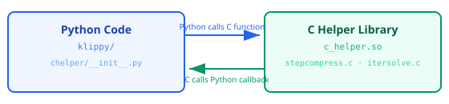
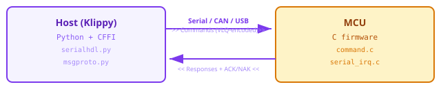
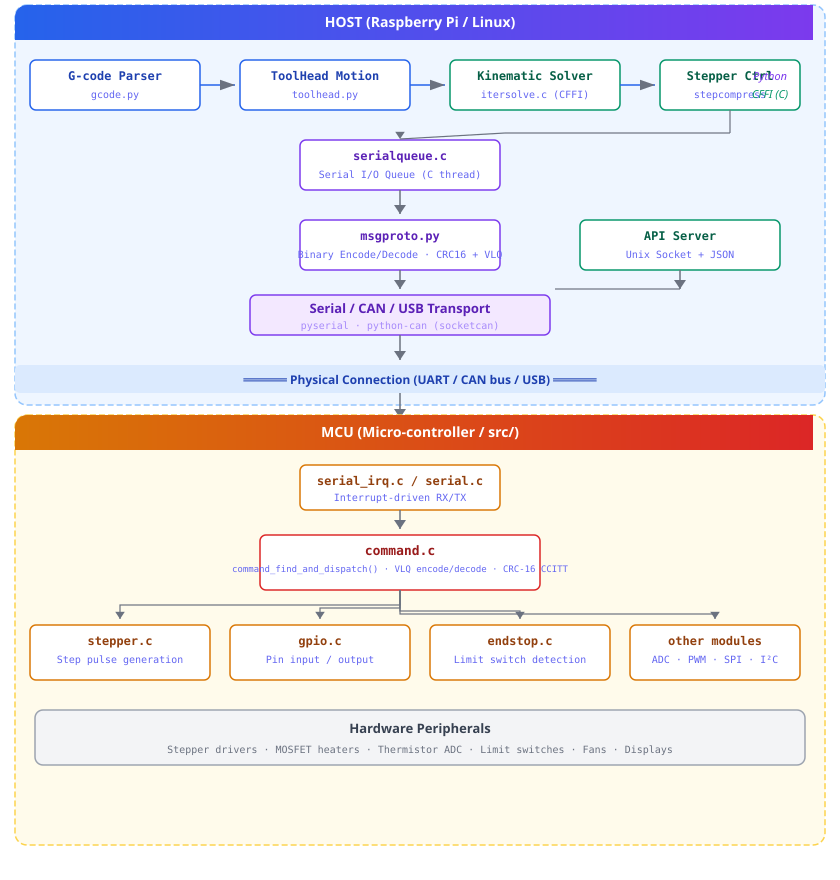

Communication Protocol: C ↔ Python Interface¶
This document describes the various communication mechanisms used
between the C/C++ code in the src/ directory and the Python code
in the klippy/ directory within Kalico. Understanding these
mechanisms is essential for developers who want to modify or
extend the firmware.
Overview¶
Kalico employs a multi-layered communication architecture to bridge the gap between high-level Python host code and low-level C micro-controller firmware. There are four distinct communication channels:
| Channel | Mechanism | Format | Direction | Use Case |
|---|---|---|---|---|
| CFFI | cffi library |
C function calls | Python ↔ C | Performance-critical computations |
| Serial/UART | pyserial / python-can |
Binary protocol | Host ↔ MCU | MCU command/response |
| Custom Binary Protocol | msgproto.py ↔ command.c |
VLQ + CRC16 | Host ↔ MCU | Firmware RPC |
| API Server | Unix Domain Socket | JSON + ETX | External ↔ Host | Monitoring/control |
1. CFFI: Python ↔ C Helper Library¶
Location¶
- Python wrapper:
klippy/chelper/__init__.py - C source files:
klippy/chelper/*.c - Compiled library:
klippy/chelper/c_helper.so
How It Works¶
The CFFI (C Foreign Function Interface) layer allows Python code
to call C functions directly for performance-critical operations.
On startup, Kalico checks if c_helper.so exists and is
up-to-date. If not, it compiles all C helper files using gcc
with the following flags:
-Wall -g -O2 -shared -fPIC -flto -fwhole-program -fno-use-linker-plugin
The C source files are compiled into a single shared library:
| C Source File | Purpose |
|---|---|
pyhelper.c |
Python logging callback registration |
serialqueue.c |
Low-latency serial I/O queue |
stepcompress.c |
Stepper pulse compression |
itersolve.c |
Iterative solver for step timing |
trapq.c |
Trapezoidal velocity queue |
pollreactor.c |
Polling-based event reactor |
msgblock.c |
Message block framing |
trdispatch.c |
Trigger dispatch |
kin_cartesian.c |
Cartesian kinematics |
kin_corexy.c |
CoreXY kinematics |
kin_corexz.c |
CoreXZ kinematics |
kin_delta.c |
Delta kinematics |
kin_deltesian.c |
Deltesian kinematics |
kin_polar.c |
Polar kinematics |
kin_rotary_delta.c |
Rotary delta kinematics |
kin_winch.c |
Winch kinematics |
kin_extruder.c |
Extruder pressure advance |
kin_shaper.c |
Input shaper |
kin_idex.c |
Dual carriage (IDEX) |
CFFI Function Definition Example¶
In chelper/__init__.py, function signatures are declared as C
strings:
defs_stepcompress = """
struct stepcompress *stepcompress_alloc(uint32_t oid);
void stepcompress_fill(struct stepcompress *sc, uint32_t max_error
, int32_t queue_step_msgtag, int32_t set_next_step_dir_msgtag);
void stepcompress_free(struct stepcompress *sc);
// ...
"""
These definitions are loaded with:
import cffi
FFI_main = cffi.FFI()
FFI_main.cdef(defs_stepcompress)
FFI_lib = FFI_main.dlopen("c_helper.so")
Usage in Python Code¶
Python modules import and use the C helpers like this:
from . import chelper
ffi_main, ffi_lib = chelper.get_ffi()
# Call C functions directly
self._stepqueue = ffi_main.gc(
ffi_lib.stepcompress_alloc(oid),
ffi_lib.stepcompress_free
)
Python Callbacks into C¶
C code can also call Python functions via CFFI callbacks. For example, logging from C to Python:
# In chelper/__init__.py
@FFI_main.callback("void func(const char *)")
def logging_callback(msg):
logging.info("MCU: %s", ffi_main.string(msg).decode())
pyhelper_logging_callback = FFI_main.callback(
"void func(const char *)", logging_callback
)
FFI_lib.set_python_logging_callback(pyhelper_logging_callback)
Data Flow: CFFI¶

2. Serial / UART Communication¶
Location¶
- Python:
klippy/serialhdl.py - C low-level:
src/generic/serial_irq.c - Platform-specific:
src/*/serial.c
How It Works¶
The host computer (e.g., Raspberry Pi) communicates with the micro-controller via a serial connection. This can be:
- UART (TTL Serial): Direct GPIO-based serial
- USB CDC ACM: Virtual serial port over USB
- CAN Bus: Controller Area Network using
python-can
Connection Establishment¶
# In serialhdl.py
import serial
self.serial = serial.Serial(port, baudrate)
For CAN bus:
import can
self.can = can.interface.Bus(channel='can0', bustype='socketcan')
C-side Serial Handling¶
On the micro-controller, serial data reception is interrupt-driven:
// In src/generic/serial_irq.c
void serial_enable_receive(int fd) {
// Enable UART RX interrupt
}
Received bytes are accumulated and passed to command_find_and_dispatch()
which locates complete message blocks and dispatches commands.
Data Flow: Serial¶

3. Binary Message Protocol (The Core RPC Layer)¶
This is the most important communication mechanism between the host and the micro-controller. It is a custom binary protocol that works like a Remote Procedure Call (RPC) system.
Location¶
- Python encoder/decoder:
klippy/msgproto.py - C encoder/decoder/dispatcher:
src/command.c+src/command.h
Message Block Format¶
Every message transmitted between host and MCU is wrapped in a message block with the following structure:
Offset Size Field
─────────────────────────
0 1 Length (total block size, min=5, max=64)
1 1 Sequence (4-bit seq | 0x10)
2 n Content (VLQ-encoded commands/responses)
2+n 2 CRC-16 CCITT
2+n+2 1 Sync byte (0x7E)
Key Constants (identical in both msgproto.py and command.h):
| Constant | Value | Description |
|---|---|---|
MESSAGE_MIN |
5 | Minimum message block size |
MESSAGE_MAX |
64 | Maximum message block size |
MESSAGE_HEADER_SIZE |
2 | Header bytes (len + seq) |
MESSAGE_TRAILER_SIZE |
3 | Trailer bytes (crc16[2] + sync) |
MESSAGE_SYNC |
0x7E | Frame sync marker |
MESSAGE_DEST |
0x10 | Sequence byte high bits |
Variable Length Quantity (VLQ) Encoding¶
Integers in the message content are encoded using a custom VLQ scheme that supports both positive and negative values:
| Integer Range | Encoded Bytes |
|---|---|
| -32 .. 95 | 1 byte |
| -4096 .. 12287 | 2 bytes |
| -524288 .. 1572863 | 3 bytes |
| -67108864 .. 201326591 | 4 bytes |
| -2147483648 .. 4294967295 | 5 bytes |
Encoding Rules:
- Each byte uses 7 bits for data, 1 bit (MSB) as continuation flag
- Sign extension is handled at decode time
- Smaller absolute values use fewer bytes
C Implementation (src/command.c):
static uint8_t *encode_int(uint8_t *p, uint32_t v) {
int32_t sv = v;
if (sv < (3L<<5) && sv >= -(1L<<5)) goto f4; // 1 byte
if (sv < (3L<<12) && sv >= -(1L<<12)) goto f3; // 2 bytes
if (sv < (3L<<19) && sv >= -(1L<<19)) goto f2; // 3 bytes
if (sv < (3L<<26) && sv >= -(1L<<26)) goto f1; // 4 bytes
*p++ = (v>>28) | 0x80; // 5 bytes
f1: *p++ = ((v>>21) & 0x7f) | 0x80;
f2: *p++ = ((v>>14) & 0x7f) | 0x80;
f3: *p++ = ((v>>7) & 0x7f) | 0x80;
f4: *p++ = v & 0x7f;
return p;
}
Python Implementation (klippy/msgproto.py):
class PT_uint32:
def encode(self, out, v):
if v >= 0xC000000 or v < -0x4000000:
out.append((v >> 28) & 0x7F | 0x80)
if v >= 0x180000 or v < -0x80000:
out.append((v >> 21) & 0x7F | 0x80)
if v >= 0x3000 or v < -0x1000:
out.append((v >> 14) & 0x7F | 0x80)
if v >= 0x60 or v < -0x20:
out.append((v >> 7) & 0x7F | 0x80)
out.append(v & 0x7F)
Parameter Types¶
The protocol supports these parameter types:
| Type Name | C Enum | Python Class | Description |
|---|---|---|---|
%u |
PT_uint32 |
PT_uint32 |
Unsigned 32-bit integer |
%i |
PT_int32 |
PT_int32 |
Signed 32-bit integer |
%hu |
PT_uint16 |
PT_uint16 |
Unsigned 16-bit integer |
%hi |
PT_int16 |
PT_int16 |
Signed 16-bit integer |
%c |
PT_byte |
PT_byte |
8-bit byte |
%s |
PT_string |
PT_string |
Dynamic string |
%.*s |
PT_progmem_buffer |
PT_progmem_buffer |
Flash-stored buffer |
%*s |
PT_buffer |
PT_buffer |
RAM buffer |
Command Declaration (C side)¶
Commands are declared in C using DECL_COMMAND():
DECL_COMMAND(command_update_digital_out,
"update_digital_out oid=%c value=%c");
This generates a command_parser structure in the compiled binary:
struct command_parser {
uint16_t encoded_msgid; // VLQ-encoded message ID
uint8_t num_args; // Number of function arguments
uint8_t flags; // Handler flags (e.g., HF_IN_SHUTDOWN)
uint8_t num_params; // Number of wire-format parameters
const uint8_t *param_types; // Array of parameter type enums
void (*func)(uint32_t *args); // Handler function pointer
};
Response Transmission (C side)¶
Responses are sent using the sendf() macro:
sendf("status clock=%u status=%c",
sched_read_time(), sched_is_shutdown());
Message Content: Multiple Commands Per Block¶
A single message block can contain multiple commands:
Human Readable:
update_digital_out oid=6 value=1
update_digital_out oid=5 value=0
get_config
get_clock
Binary (VLQ integers):
<id_update_digital_out><6><1><id_update_digital_out><5><0><id_get_config><id_get_clock>
CRC-16 CCITT¶
Both sides use identical CRC-16 CCITT implementations for data integrity verification:
# Python (msgproto.py)
def crc16_ccitt(buf):
crc = 0xFFFF
for data in buf:
data ^= crc & 0xFF
data ^= (data & 0x0F) << 4
crc = ((data << 8) | (crc >> 8)) ^ (data >> 4) ^ (data << 3)
return [crc >> 8, crc & 0xFF]
The C implementation is in board-specific code (e.g.,
src/generic/crc16_ccitt.c).
Data Dictionary (Identify Protocol)¶
When the host first connects to an MCU, it must download the data dictionary. This dictionary maps command/response format strings to their numeric IDs.
- Host sends
identifycommands requesting chunks of data - MCU responds with
identify_responsecontaining compressed JSON - JSON is zlib-compressed and stored in the MCU's flash
- Once assembled, the host parses the JSON to learn all available commands, responses, enumerations, and constants
The identify command (ID=1) and identify_response (ID=0) are
the only messages with hard-coded IDs. Everything else is dynamic.
Acknowledgement and Retransmission¶
Host → MCU (Assured delivery):
- Each correctly received block triggers an ACK from the MCU
- Host retransmits on timeout
- MCU sends NAK for corrupt/out-of-order blocks
- Windowing allows multiple in-flight blocks
MCU → Host (Best-effort):
- No automatic retransmission
- High-level code must handle missing responses
- Sequence numbers track host-originated traffic only
4. API Server: Unix Domain Socket + JSON¶
Location¶
- Python:
klippy/webhooks.py
How It Works¶
The API Server provides external access to printer status and controls via a Unix Domain Socket:
# In webhooks.py
self.sock = socket.socket(socket.AF_UNIX, socket.SOCK_STREAM)
self.sock.bind("/tmp/kalico_uds")
Message Format¶
Messages are JSON-encoded strings terminated by 0x03 (ETX):
<json_object_1><0x03><json_object_2><0x03>...
This allows tools like OctoPrint, Mainsail, and Fluidd to communicate with Kalico for monitoring and control.
5. Thread Architecture¶
The host-side Klippy process uses 4 threads:
| Thread | Location | Purpose |
|---|---|---|
| Main | klippy/gcode.py |
Incoming G-code processing |
| Serial I/O | klippy/chelper/serialqueue.c |
Low-level serial port I/O |
| Response Handler | klippy/serialhdl.py |
Process MCU response messages |
| Logger | klippy/queuelogger.py |
Non-blocking debug logging |
6. Complete Data Flow Diagram¶

7. Summary¶
| Layer | Python Side | C Side | Format | Reliability |
|---|---|---|---|---|
| CFFI | chelper/__init__.py |
chelper/*.c |
Direct function calls | N/A (in-process) |
| Binary Protocol | msgproto.py |
command.c/h |
VLQ integers + CRC16 | ACK/retransmit |
| Serial Transport | serialhdl.py |
serial_irq.c |
Raw bytes over UART/CAN/USB | Hardware dependent |
| API Server | webhooks.py |
N/A | JSON + ETX over Unix socket | TCP reliability |
| Data Dictionary | msgproto.py (parse) |
compile_time_request.c (generate) |
Zlib-compressed JSON | Identified at connect |
Key Design Principles¶
- Minimal MCU complexity: The MCU uses a static (compile-time) data dictionary. The host adapts to whatever the MCU provides.
- Bandwidth efficiency: VLQ encoding minimizes bytes for common small values. Multiple commands are batched per block.
- Error detection: CRC-16 CCITT catches corruption. Sequence numbers detect out-of-order delivery.
- Separation of concerns: CFFI handles computation, serial handles transport, msgproto handles encoding, and the API server handles external access.
- Performance-critical paths in C: Step compression, iterative solving, and serial I/O are all implemented in C for speed, while high-level logic remains in Python for flexibility.
See Also¶
- Protocol — Details of the host↔MCU binary protocol
- Code Overview — Overall code structure
- MCU Commands — Available MCU commands
- Debugging — How to inspect protocol messages